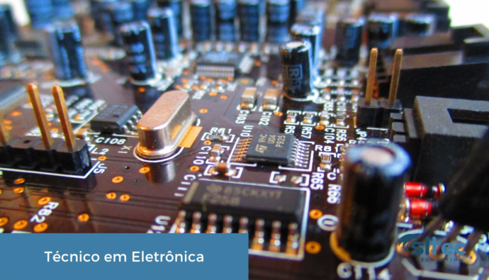
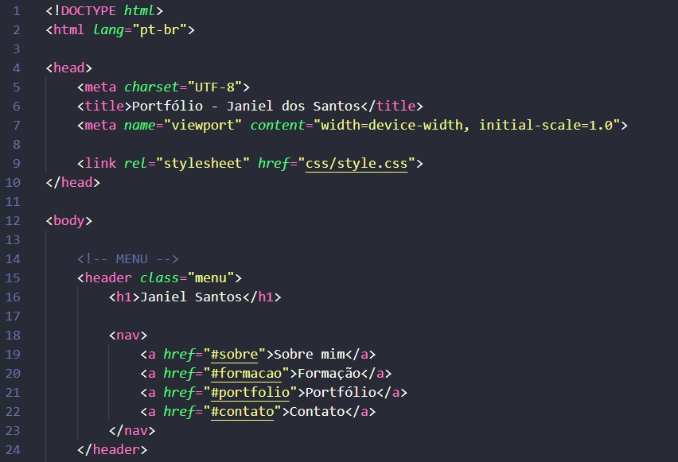

Sobre mim
Nome: Janiel dos Santos
Cidade: Ribeirão Preto - SP
Formação: Técnico em Eletrônica
Curso: Ciência da Computação
E-mail: janielsantos989@gmail.com
Resumo Profissional
Sou Janiel dos Santos, estudante de Ciência da Computação pela UNINTER e Técnico em Eletrônica, formado pela ETEC Centro Paula Souza – Ribeirão Preto.
Experiência Técnica
- Telecomunicações e infraestrutura de redes
- Comunicação por fibra óptica
- Interligação de data centers e backbone
- Sistemas ITS (Intelligent Transportation Systems)
- CFTV, radares inteligentes e Wi‑Fi público (hotspot)
Área de Interesse
Tenho grande interesse em tecnologia, eletrônica e desenvolvimento de sistemas, buscando aprimorar continuamente meus conhecimentos técnicos e acadêmicos na área de Tecnologia da Informação.
Formação

Formação Acadêmica
- Técnico em Eletrônica
- Cursando Ciência da Computação
Cursos e Conhecimentos
- Informática básica
- Excel avançado
Portfólio

Este site representa meu portfólio pessoal, desenvolvido como atividade prática da disciplina Fundamentos da Programação Web. O projeto utiliza HTML, CSS e JavaScript para construção das páginas e interação com o usuário.